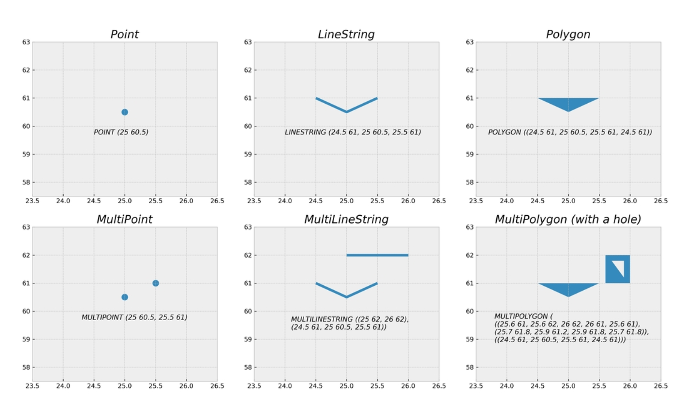
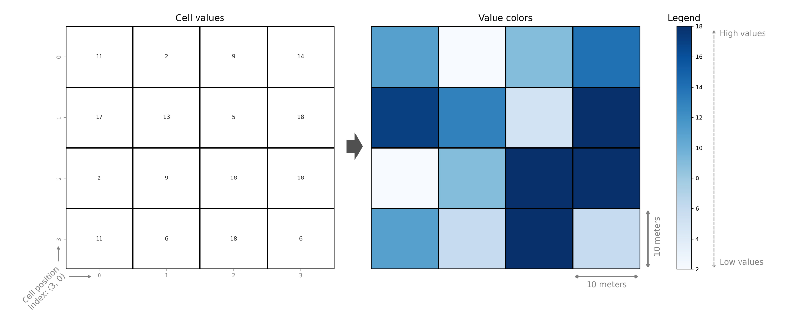
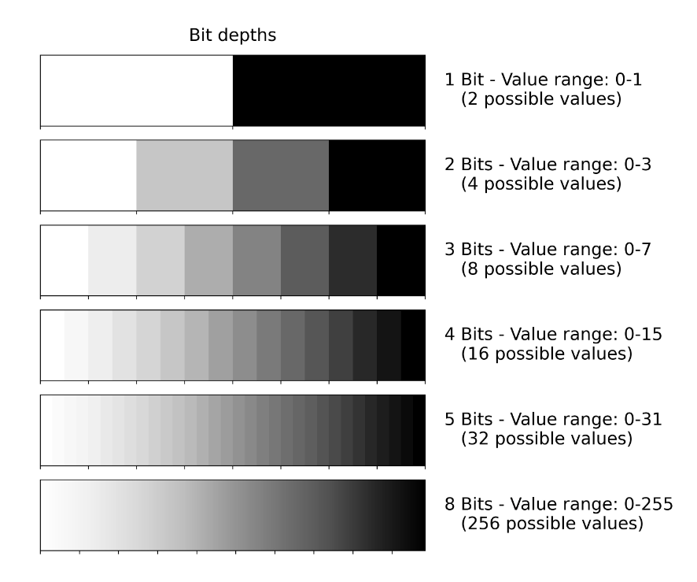
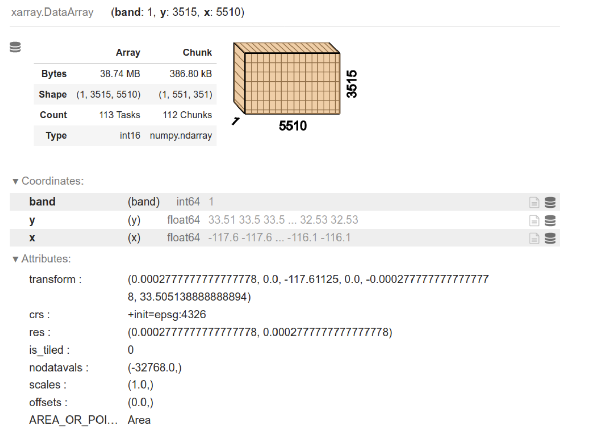

Geographic Data
- Geographic information can be represented in two forms vector or raster
- Vector representations are constructed from points in geographical space which are connected to each other forming lines and polygons
- Rasters are constructed from rectangular cells that form a uniform grid. Each cell of the grid contains a value representing some information such as elevation, temperature or presence / absence
- Spatio-temporal data incorporates time as additional dimension to the geographic dimension
Vector data
- Geometric objects like points, lines and polygons are used

Attribute data
- Attribute data is typically attached to the geometries that describe the given entity with various possible characteristics. Attributes are always linked to the geometries in one way or another.
Vector data formats
- GDAL (Geospatial Data Abstraction Library) is a library for reading and writing raster and vector data formats which is used by most of the software libraries
Shapefile
- Introduced by ESRI
- Filename extension is .shp
- It is made of multiple separate files
- A valid shapefile dataset consist of:
- .shp - Feature geometries
- .shx - Positional index for the feature geometries
- .dbf - Attribute information
- .prj - Information about CRS of the dataset
GeoJSON
- Open format for encoding variety of geographic data structures along with their attribute information
- Filename extension is .geojson
- File is not compressed
- An example of GeoJSON data
{"type": "FeatureCollection",
"features": [
{"type": "Feature", "properties": {"id": 75553155, "timestamp": 1494181812},
"geometry": {"type": "MultiLineString", "coordinates": [[[26.938, 60.520], [26.938, 60.520]], [[26.937, 60.521], [26.937, 60.521]], [[26.937, 60.521], [26.936, 60.522]]]}
},
{"type": "Feature", "properties": {"id": 424099695, "timestamp": 1465572910},
"geometry": {"type": "Polygon", "coordinates": [[[26.935, 60.521], [26.935, 60.521], [26.935, 60.521], [26.935, 60.521], [26.935, 60.521]]]}
}
]
}GeoPackage
- It uses SQLite database container to store the data
- Filename extension is .gpkg
GML
- Geography Markup Language (GML) is an XML based format
- It serves as a modeling language for geographic systems as well as an open interchange format for geographic transactions on the Internet
- File extension is .gml
Raster data
- Data is represented as arrays of cells (called pixels) to represent real-world objects or continuous phenomena Ex- Digital photos with RGB channels
- We can store other information to pixels, such as elevation or temperature data or more detailed spectral information that capture how the light reflects from objects on earth at different wave-lengths



Raster Data Formats
GeoTIFF
- Based on TIFF format developed by NASA
- File extension is .tif
COG
- Cloud Optimized GeoTIFF (COG)
- File extension is .tif
NetCDF
- Network Common Data Form
- Variables stored in NetCDF are often measured multiple times per day over large (e.g. continental) areas
- The file extension of NetCDF is .nc4
ASCII Grid
- Used to transfer Raster files between applications
- The file extension of ASCII Raster File is .asc
IMG
- The ERDAS Imagine file format (IMG) is proprietary file format that was originally created by an image processing software company called ERDAS. The file can be accompanied with an .xml file which stores metadata information about the raster layer
- The file extension of Imagine file format is .img
Spatial Graphs
- Networkx is used to store graph objects
- pysal rely on sparse adjacency matrix